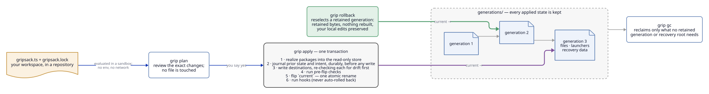
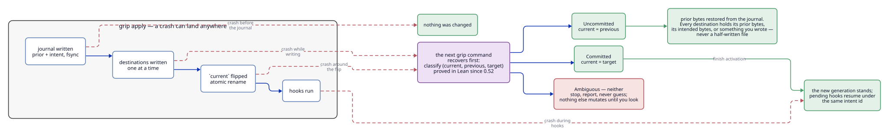
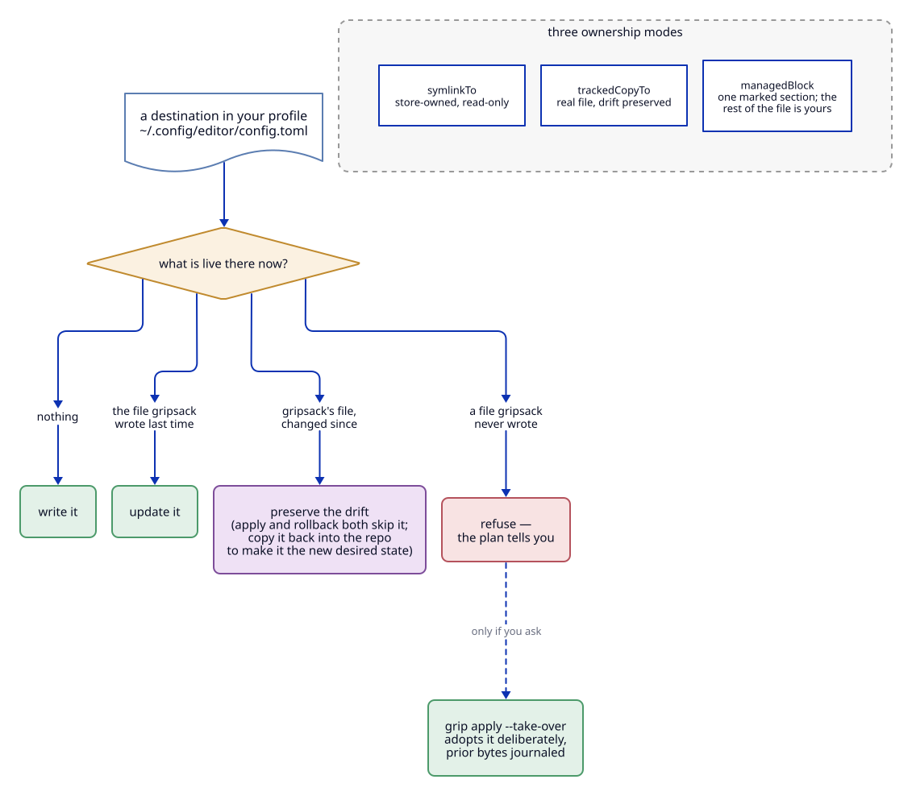

Safety and recovery
Gripsack writes to files you care about, so this page is about what happens to them: how an apply is structured, what a crash leaves behind, how ownership and drift are decided, and what you still have to do yourself. For what is formally proved versus assumed, see how gripsack stays safe.
Two things first. It is alpha software: keep an independent backup of anything irreplaceable. And generations protect managed files and launchers; they do not undo what your hooks, tasks, services or the tools themselves do.
What apply does


- Realize packages into the read-only store. Content is verified, sealed read-only and published by rename, so a half-downloaded archive never becomes a package.
- Journal the prior state and the intended end state of every destination, durably, before touching any of them.
- Write destinations one at a time, re-reading each through a pinned directory handle and refusing if what is live is not what the plan saw.
- Run pre-flip checks you attached to files, still inside the transaction.
- Flip
current: one atomic rename selects the new generation. This is the commit point. - Run hooks (
post_link,post_activate). Hook failures are reported; they never roll the committed generation back.
Destination writes are not atomic across a whole profile: a program reading its config in the middle of step 3 can see the new file before its sibling. Stop consumers that need an uninterrupted view.
What a crash leaves behind


The next grip command recovers before it does anything else. It compares the current pointer with the previous and target generation recorded for the interrupted transaction:
- Uncommitted (
currentstill names the previous generation): prior bytes are restored from the journal. - Committed (
currentnames the target): activation finishes; pending hooks resume under the same intent id. - Ambiguous (neither): nothing else mutates until you look. Corrupt manifests and quarantined journal entries are reported, not treated as disposable.
Either way each destination ends up holding its prior bytes, its intended bytes, or something gripsack did not write. Recovery covers file bytes, Unix modes and symlink targets, not mtimes, ownership or extended attributes. A file you changed while the transaction was interrupted is preserved, not replaced with the snapshot.
Do not delete journals, manifests or managed files to "unstick" a refusal; the run log says what recovery found.
Ownership and drift


Every destination has an owner. Gripsack writes only when the destination is absent, or holds exactly what gripsack wrote last time. Two other cases are decided conservatively:
- Drift. A
trackedCopyTofile that the application (or you) changed since the last apply is yours. Apply and rollback both leave it alone and say so. To adopt the change, copy it back into the repository, review, approve and apply. - Foreign files. A file gripsack never wrote is refused.
grip plan --take-overshows what adoption would do;grip apply --take-overjournals the prior bytes and adopts the selected destinations only. It is not a general ownership transfer and does not cross workspaces.
symlinkTo links the destination to read-only store content; managedBlock reconciles one delimited section of a shared text file and leaves every byte outside the markers alone. See profiles and dotfiles for choosing between them.
Rollback, retention and GC
grip generations
grip rollback
grip gc --dry-run
grip rollback reselects a retained generation: files, launchers and package roots come from retained bytes, nothing is re-solved or rebuilt, and drift is preserved exactly as during apply. Rollback is a new activation and may run the retained generation's hooks; it is not an undo of commands run since then.
grip gc refuses while recovery is pending or current is not in the inventory. It never removes the current generation or anything a retained generation or recovery root references. keep_generations in settings controls how many predecessors are kept; keep them until the real application has worked with the deployed files.
Source approval
Workspace code is evaluated in a sandboxed Deno with no environment, network or subprocess access, over a captured copy of the repository. Before evaluation you approve the exact captured bundle and policy, so a changed file, a changed exclusion or a changed frontend needs a fresh approval. There is no repository-wide "trust everything"; GRIPSACK_TRUST_ALL=1 is refused.
grip trust inspect --json
grip trust add
--focus and profile selection narrow what is displayed or deployed, never what is approved. Approval also says nothing about what the packages and hooks you declared will do when they run: those run with your privileges.
For unattended machines, record the bundle and policy digests when you review the source, and compare before approving:
set -eu
: "${expected_bundle:?load the separately reviewed bundle digest}"
: "${expected_policy:?load the separately reviewed policy digest}"
source=$(grip trust inspect --json)
[ "$(printf '%s' "$source" | jq -er .bundle_digest)" = "$expected_bundle" ] &&
[ "$(printf '%s' "$source" | jq -er .policy_digest)" = "$expected_policy" ] ||
{ echo "captured source differs from review — NOT approving" >&2; exit 1; }
grip trust add --bundle "$expected_bundle" --policy "$expected_policy"
grip check
Never derive the expected values from the inspection you are about to approve.
Hooks and checks
Rendered-file checks run before any destination is written. Deployed pre_flip checks run after candidate writes but before the flip, inside the transaction. post_link and post_activate run after commit and are never auto-rolled back.
Hooks have durable intents. An interrupted delivery can run again under the same intent id, so write idempotent hooks. Failed intents are not retried automatically. See tasks and checks.
Host libraries and launchers
A Linux GNU package may declare hostRuntime: { libraryDirectories: [...] }. Those directories are trusted host input: review who controls them. They are package-scoped and never widen what the evaluator or other packages can see.
Managed launchers embed the absolute path of the installed core and its private state directory. If you move the binary, reapply with the new one rather than editing launchers. Run as the UID that owns the state; placing a launcher in /usr/local/bin does not make the store multi-user.
What is not covered
- Effects of hooks, tasks, services and the programs you deploy. Rollback does not undo a database migration.
- Writes by another process in the window between gripsack's re-check and its own write (a named residual risk).
- Same-UID or privileged tampering with the store, journals or trust records.
- Anything outside Linux x86_64 and WSL2.